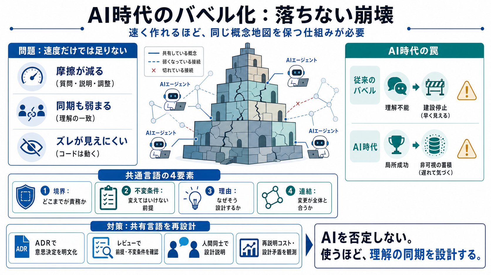

Armin Ronacher
Armin Ronacher is a software developer and open-source creator behind projects like Flask and Jinja2, sharing insights o…

AIエージェントで開発は速くなる一方、チームが「同じ概念地図」を保てなくなると、コードは倒れずに“気づかない崩壊”が進む。
AIは摩擦（質問・説明・調整）を減らせるが、減らすほど「理解を一致させる同期」も弱まる可能性がある。
鍵は、英語やPythonの“言語”ではなく、境界（どこまでが責務か）と不変条件（変えてはいけない前提）の共通理解。
“傲慢と罰”よりも、「共有言語（概念の一致）が失われる」構造がポイントになる。
エージェントが「書く／動かす／説明する」能力を肩代わりし、人間同士が直接やり取りして共有理解を作る必要が減る。
タワーは落ちないので、崩壊の兆候が“運用の中に埋もれる”。
ここでの共通言語は、プログラミング言語そのものではなく、次の4要素の一致（日本語補助: 共通理解）だ。
テストが検出できるのは主に既知の振る舞いだが、共有言語の崩壊は仕様の解釈違い・前提ズレ・責務境界の曖昧化として蓄積しうる。
「使うほど気を付けるべき盲点」を、組織レベルで扱う視点。
AI説明生成（日本語補助: 自動要約）に頼り切らず、最終的に人間が概念フレームを保持できる運用を用意する。
成熟組織では、AI導入後もドキュメント・レビュー・意思決定ログで「同期の別形式」へ置換できる可能性がある。
“タワーが落ちない”非可視化は、どの指標で観測するかが鍵になる。
AIで摩擦は減っても、「理解の一致」を作る仕組みが弱まると、コードは動き続けながら組織の整合性は静かに崩れ得る。
Armin Ronacher is a software developer and open-source creator behind projects like Flask and Jinja2, sharing insights o…
Title: #Armin Ronacher Articles | StartupHub.ai # #Armin Ronacher. 1 articles with this tag. AI Agents: The Double-Edged…
Title: #Armin Ronacher Articles | StartupHub.ai # #Armin Ronacher. 1 articles with this tag. AI Agents: The Double-Edged…
Title: What is Consensus Mechanism (Agents) in AI? # Consensus Mechanism (Agents). **Consensus Mechanism (Agents)** refe…
Title: Understanding the Consensus Problem in Distributed Systems #### Distributed Systems for Practitioners. ##### 1.Be…